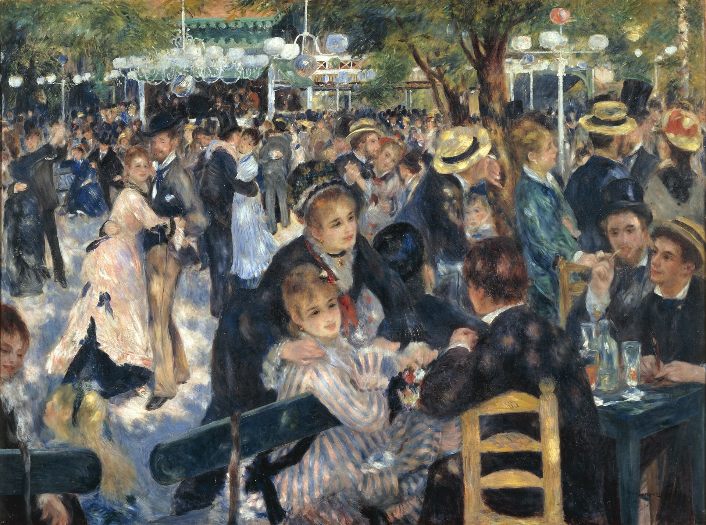

煎饼磨坊的舞会 Dance at Le Moulin de la Galette
雷诺阿 · 1876年 · 巴黎奥赛博物馆
Pierre-Auguste Renoir · 1876 · Musée d'Orsay, Paris
图片：Wikimedia Commons，公有领域 / Image: Wikimedia Commons, public domain

发现 · Discover
星期天下午 Sunday afternoon
星期天下午，巴黎人会打扮好来到这里，跳舞、喝酒、吃煎饼，一直玩到晚上。
On Sunday afternoons, Parisians dressed up and came here to dance, drink and eat galettes until evening.
煎饼 The galette
“煎饼磨坊”的名字，来自这里的招牌点心：一种叫“galette”的煎饼。
The Moulin de la Galette took its name from its speciality, a kind of flat cake called a galette.
树下的光斑 Dappled light
阳光透过洋槐树的叶子，在人们的衣服和地上洒下一块块光斑。这是印象派很喜欢画的效果。
Sunlight filters through the acacia leaves, scattering patches of light on clothes and ground, an effect the Impressionists loved to paint.
条纹裙的女孩 The girl in stripes
前景中间穿条纹裙的女孩，据说是雷诺阿的模特让娜的姐姐埃丝特尔。
The girl in the striped dress in the centre foreground is said to be Estelle, the sister of Renoir's model Jeanne.
真实的人 Real people
和马奈画杜伊勒里花园一样，雷诺阿在画里放进了不少真实的人物肖像，有的是他的朋友。
As Manet had done in his painting of the Tuileries, Renoir included a number of real portraits, some of them his friends.
搬来搬去的画布 A canvas on the move
据他的朋友回忆，每到合适的时候，朋友们就帮雷诺阿把这张大画布从画室搬到舞场。
According to a friend, whenever the moment was right, Renoir's friends helped him carry this large canvas from his studio to the dance garden.
卡耶博特的画 Caillebotte's painting
1879年到1894年，这幅画属于画家卡耶博特。他去世后，它成为法国国家财产。
From 1879 to 1894, the painting belonged to the painter Caillebotte. After his death, it became the property of the French state.
故事 · The story
ACT I 第一幕 · 蒙马特的星期天 A Sunday in Montmartre
19世纪70年代，蒙马特还像个乡村。山顶附近的煎饼磨坊，是附近居民和年轻人星期天下午跳舞的地方，也有不少画家来这里。
In the 1870s, Montmartre was still almost rural. The Moulin de la Galette, near the top of the hill, was where local people and young couples danced on Sunday afternoons, and where artists came too.
1876年 · 巴黎奥赛博物馆 / 1876 · Musée d'Orsay, Paris
ACT II 第二幕 · 在现场画 Painted on the spot
1876年，雷诺阿决定画下这里的舞会。他的朋友回忆，这幅画是完全在现场画的。不过雷诺阿还画了一幅较小的版本，到底哪一幅是在现场画的，至今仍有疑问。
In 1876, Renoir decided to paint the dancing here. A friend recalled that it was painted entirely on the spot. But Renoir also painted a smaller version, and which one was painted on site is still uncertain.
1876年 · 巴黎奥赛博物馆 / 1876 · Musée d'Orsay, Paris
ACT III 第三幕 · 从卡耶博特到奥赛 From Caillebotte to the Musée d'Orsay
这幅画后来属于卡耶博特。他去世后，它进入了法国国家收藏，先后挂在卢森堡博物馆和卢浮宫，1986年起在奥赛博物馆。
The painting later belonged to Caillebotte. After his death it entered the French national collection, hanging at the Musée du Luxembourg and then the Louvre, before moving to the Musée d'Orsay in 1986.
1876年 · 巴黎奥赛博物馆 / 1876 · Musée d'Orsay, Paris
阳光、音乐和一个星期天的下午。 Sunlight, music and a Sunday afternoon.
作品档案 · Artwork record
| 画家（生卒年） · Artist (dates) | 皮埃尔-奥古斯特·雷诺阿（1841–1919） / Pierre-Auguste Renoir (1841–1919) |
|---|---|
| 画名 · Title | 煎饼磨坊的舞会 / Dance at Le Moulin de la Galette (Bal du moulin de la Galette) |
| 年份 · Date | 1876年 / 1876 |
| 材质 · Medium | 布面油画 / Oil on canvas |
| 尺寸 · Dimensions | 131.5 × 176.5 cm |
| 收藏地 · Collection | 巴黎奥赛博物馆（卡耶博特遗赠，1894年） / Musée d'Orsay, Paris (Gustave Caillebotte bequest, 1894) |
关于画家 · About the artist
皮埃尔-奥古斯特·雷诺阿（1841–1919），法国画家。他和莫奈在学画时就是好友，是印象派的核心人物之一。19世纪80年代，他开始离开印象派，转向古典艺术。
Pierre-Auguste Renoir (1841–1919) was a French painter. He and Monet became friends as students, and he was one of the leading Impressionists. In the 1880s he began to move away from Impressionism towards classical art.
更多雷诺阿的画 · More by Pierre-Auguste Renoir